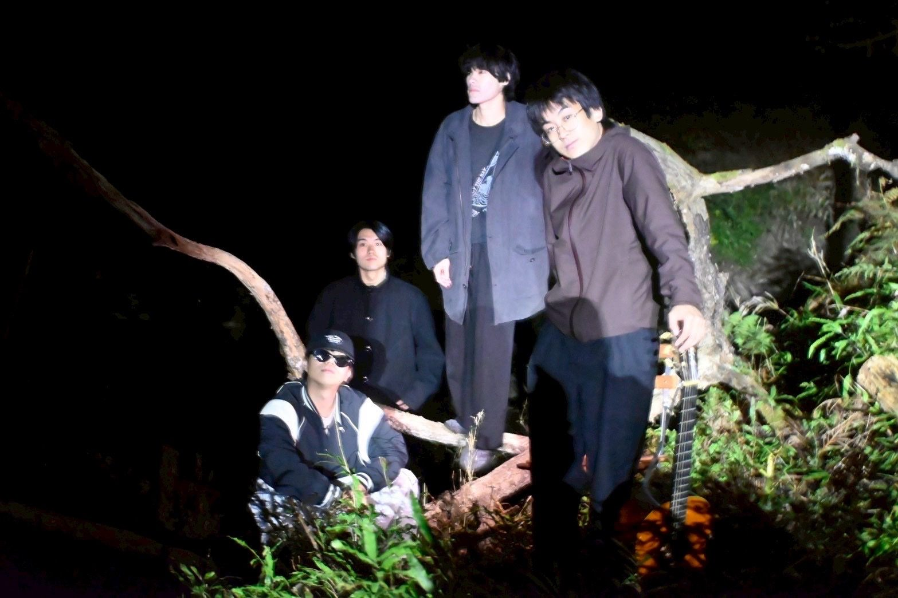
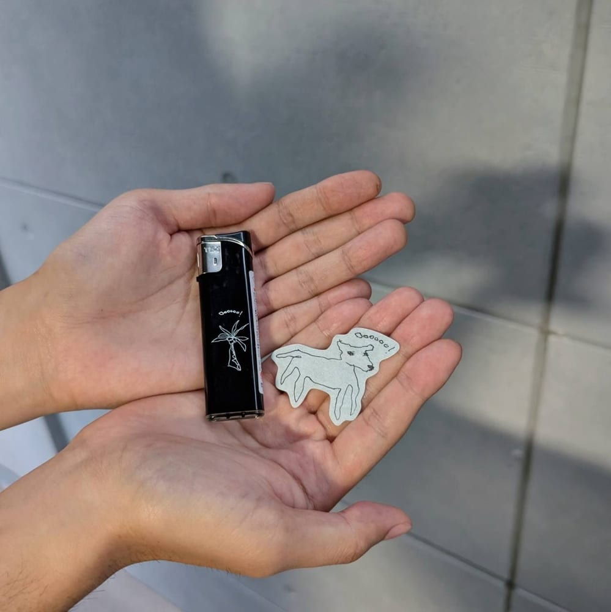

最新情報は各種SNSで
チケットのご予約はGoogleフォーム、または各種SNSのDMから受け付けています
NEWS
LIVE
DISC
GOODS

ライブ会場でCD・ライター・ステッカーを順次発売中
オンライン発売は現在行っておりません
ABOUT
Oo(ウー) 京都を拠点に活動中
2025年結成
梅原創明(Vocal) / 落合孝政(Guitar) / 中口智晴(Bass) / 桒原旺大(Drums)
Oo is a band based in Kyoto.
Formed in 2025.
Members: Somei Umehara(Vocal), Kosei Ochiai(Guitar), Tomoharu Nakaguchi(Bass), Ota Kuwahara(Drums)